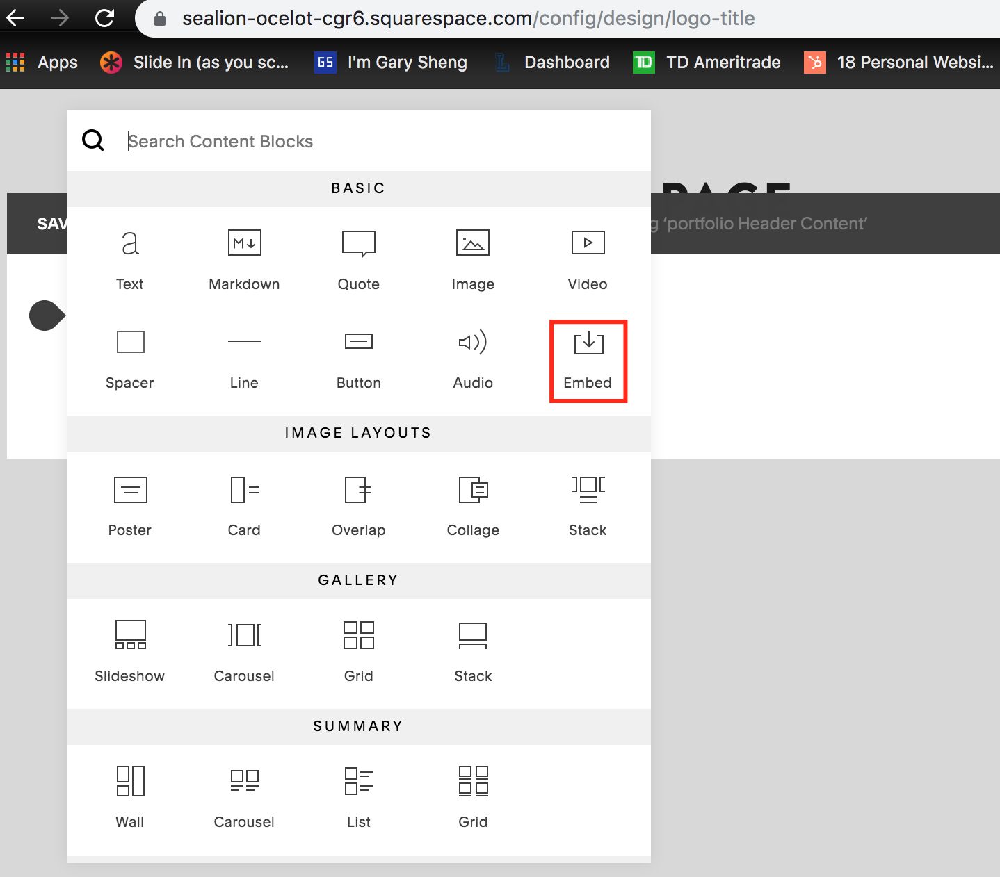
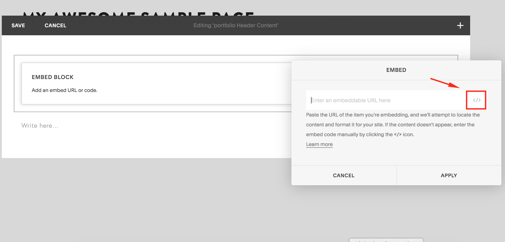
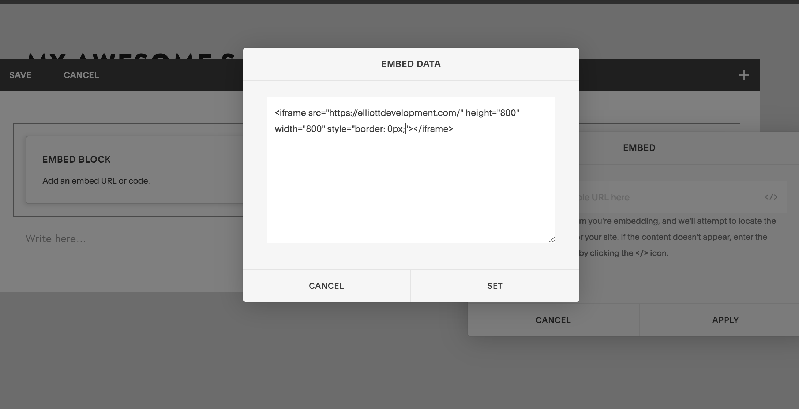

How to Add an iframe Embed to Squarespace (With Pictures)
December 23, 2019
Adding an iframe to squarespace would ideally be a quick and easy process, however,
certain required fields can be difficult to find. While squarespace
provides a short guide, they do not provide images, which can make the process
harder than it needs to be. Therefore, I’ve provided pictures and a short summary
of the steps needed below.
Before Starting: While there are many ways to embed content, please note that these instructions are for an iframe. An iframe code snippet should look something like
<iframe>src=”https://mywebsite.com height=”500” width=”500”></iframe>
While some embed providers like youtube allow users to embed content in a multitude of ways, other embed providers may only allow users to embed using an iframe. This content is relevant for those users.
Okay... Let's Get Started!
1. Select the 'Add Content' Block
In your squarespace site, navigate to pages and select the page that you would like to add the embed player to and click ‘Edit’ on the appropriate section of the page. Click the ‘add content block’ and select ‘Embed’ as shown in the image below.

2. Find the Embed iframe Button
Once the ‘paste embed player’ window appears, select the ‘’ icon to the right of the embed input box as shown in the below image. Keep in mind,
while there are multiple ways of adding embedded content, using this button is the only way to embed an iframe.
>
3. Paste your iframe
An ‘Embed Data’ window as shown below should appear. Paste the embed player iframe snippet that Songtradr provides in the squarespace ‘Embed Data’ window. An example is shown below. Keep in mind, the embed code snippet that you have may be different than the one in the image below, however, yours should still resemble an iframe format, for example:
<iframe src={websitetoembed} height={height number} width={width number}></iframe>
Note that the iframe has src, height, and width attributes, but it may also contain a style attribute and others.
>
4. Set your iframe
Once you have pasted the embed iframe into the embed data field, Select the “Set” button then click apply. The embed player should now appear on your squarespace site. When the iframe appears correctly, click save and your iframe embed integration is complete!
>
You're Done!
If you would to change the height, width, or styles of your iframe, you can change the 'html attributes' that are within your iframe. Specifically, the height, width, and style field can be used to customize the styles to match your needs.
I hope this guide was able to help. If you need a hand with your site, please feel free to reach out to me at ElliottDevelopment@gmail.com
Wyatt